The theme of this section is "writing classes" and it brings together everything that we've discussed separately in this chapter. As I've pointed out several times, writing your own classes to define your own objects is really at the heart of object-oriented programming.
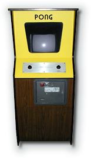
Defining a class is a two-step process. You need to:- define the attributes (fields or instance variables) that each object will use to store its state.
- write the methods each object will use to carry out its unique behavior.
So far in this chapter you've learned how to define instance variables, write methods, use encapsulation and define constructors. Now it's time to direct all of that learning to a useful purpose:
The version of Pong you'll be working on is one of Stanford University's Nifty Assignments. It was originally developed by Professor Grand Braught at Dikinson College. I've modified it to work in DrJava.
Introduction
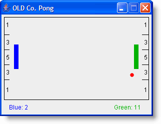
Here's the "backstory" from the original nifty assignment: You have just been hired by the Object-Oriented Language Development Company (OLD Co.) They have begun development of what they believe to be a radically new computer game, with the wholly original name of Pong, which you can see in the screenshot to the right.Pong is a two player game in which each player attempts to prevent the pong-ball from reaching the wall behind his pong-paddle. A player deflects the pong-ball before it reaches the wall by placing his pong-paddle into path of the pong-ball. This causes the ball to bounce off of the paddle in the opposite direction.
If the ball reaches the wall behind a player's paddle, the opponent scores. The number of points scored is dependent on the region of the wall contacted by the ball. The closer to the center of the wall the greater the number of points scored. (You can see the regions marked on the walls behind the paddles.)
The high-paid software engineers at OLD Co. spent years designing the Pong program. They have identified the classes that the program will use, and they have carefully defined the public interfaces of each of the classes. The specifications for these classes were handed off to the programmers who completed the majority of the project. However, just before the program was complete, all of the programmers were offered huge salaries to develop automated trading programs on Wall Street. Once they saw all the money that was to be made, they all simply quit on the spot!
So, in exchange for a big check I agreed to write these classes for OLD Co. But being, ever the dedicated educator, I decided that writing these classes would be a good experience for you. (Of course, I get to keep the check from OLD Co!)
The remainder of this section describes how to get started writing the Pong game and the details of the classes you must write.
Setup
All the files you need for the Pong game are included in
this chapter's code folder, inside their own folder.
To open the files, you use Project->Open and locate
Pong.drjava in the Pong-Project folder.
To try it out, just open
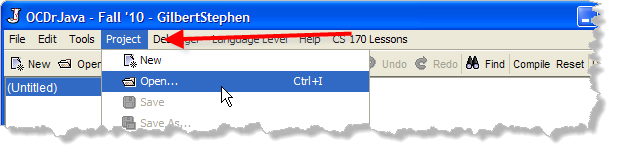
As you can see, this opens all of the classes used in the project. It also allows me to specify a library file (PongLib.jar) be used when compiling these files. You can see these settings, by choosing Project->Properties after opening the Pong project: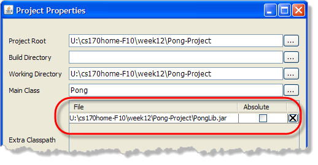
Compiling and Running Pong
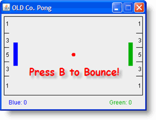
To compile all the files, choose Compile Project. To run the finished program, just choose Run Project. When the Pong application starts up, pressing the "B" key is supposed to start the ball bouncing. Then, pressing the "A" or "Z" keys should move the blue paddle, and pressing "K" or "M" should move the green paddle.Finally, as points are scored, the individual scores should be tallied in the status area.
Obviously, though, nothing works!.
Of course, that's why we need you! You'll need to implement
the PongBall, PongScore and
PongPaddle classes. I'll walk you through
PongBall. You'll do PongScore
and PongPaddle
as homework exercises.
The PongBall Class
Your assignment is to write and test three classes
that are missing from the Pong game. These classes are the
PongScore, PongPaddle and PongBall
classes. We'll start with PongBall first.
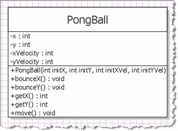
ThePongBall class describes the object which the Pong
application uses to represent the ball that bounces around the screen.
The following class diagram illustrates the information and
operations that are defined by the PongBall class.
When the Pong application is executed it creates a new
PongBall object that is positioned at the center of
the playing field. Approximately every 10th of a second
the Pong application calls the move() method on its
PongBall object causing the ball to update its position.
Following the call to move() the Pong application uses
the getX() and getY() methods to find
the new location of the ball.
If the Pong application determines that the ball would have collided
with a wall or a paddle it will invoke the bounceX() or
the bounceY() method to change the horizontal or vertical
direction of the ball. Finally, the Pong application will draw the
ball on the screen at its new location and the process will be
repeated again in another 10th of a second.
Implementation
To get started, create a new class in DrJava named
PongBall. You just need to write the basic class skeleton,
filling in the Javadoc at the beginning, like this:
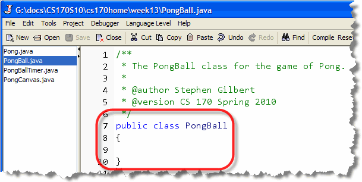
Save PongBall.java in the same folder as the other classes. You'll see that DrJava automatically adds it to your project.Now, compile the Pong project once again.
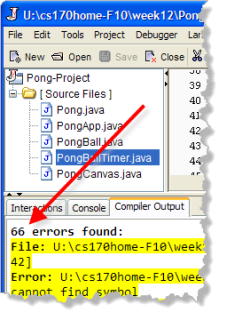
Hmmmm! As you can see in the screen-shot on the right, your Pong project, which had no errors last time we compiled, now has 66 new errors! What's going on with that??? Well, first, don't be alarmed. The error you see occurs because
when you added the new, minimal PongBall class, it
replaced the non-functional, but syntactically correct version
of PongBall already included in the project's
PongLib.jar file.
Once you've completed your new class by
adding all the necessary fields and methods that a
PongBall should have, all of the
syntax errors will disappear. In the meantime, while you
can't compile the project with the incomplete version of
PongBall, you can compile
and test the PongBall class by itself.
- Select PongBall.java in DrJava's File Pane, right-click, and select Compile File.
- To test your class, you can use the CS 170 Check program we've used earlier in the semester.
When you use Check as a guide to developing your classes,
it will put your syntax errors at the bottom (instead of at the
top, like it did with the function tests you met earlier). Make
sure you correct all of the lines marked SYNTAX before
worrying about the correctness of your program.
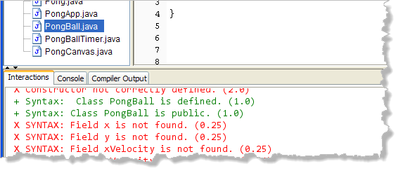
Instance Variables
Once you have the skeleton in place, you'll need to implement
the instance variables that will store each object's
state as the program runs. As you can see from the UML class
diagram, you'll need to define instance variables for the x
and y position of the ball as well as the velocity
of the ball in the x and y directions. These
will be int variables that will be initialized
by the PongBall constructor.
Here's what your code should look like at this point:
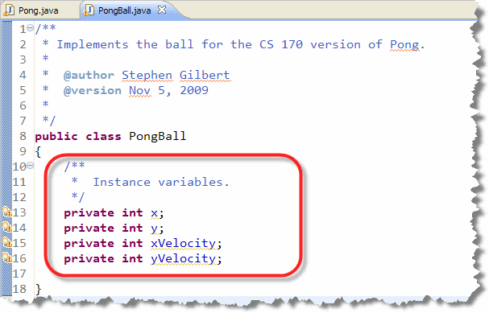
Note that each instance variable is declared using theprivate modifier.
The Pong Game Specification
Once you have the instance variables in place, you're ready to
define the constructor and other methods in
the PongBall class. You can find the signatures
for the constructor and the methods in the UML diagram you saw earlier.
That's all of the information you need to write the headers for each of the additional methods, but it's not enough information to actually write the instructions inside the method itself. For that, you'll need to use the specifications supplied by the program designer. In this case, you'll find the specifications in the PongGameSpec.pdf file in the Pong-Project code folder.
You can open the spec using your system's PDF software
just by double-clicking the file in Windows Explorer
(or the Finder, if you're using the Mac):
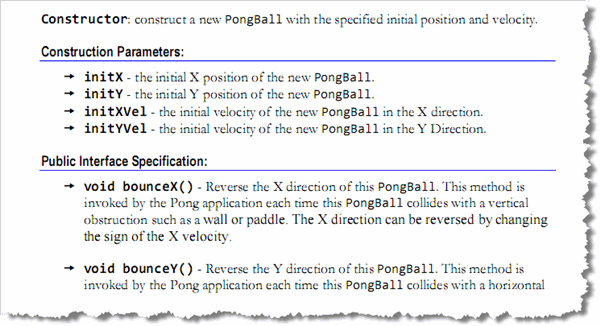
Scroll down until you find the documentation for thePongBall class.
Your implementation of the PongBall class must meet
the specifications given in the documentation, so please study it
carefully.
Here are the constructors and methods you'll need to define:
The Constructor
The constructor takes four arguments which you'll just use to
initialize the instance variables like this:
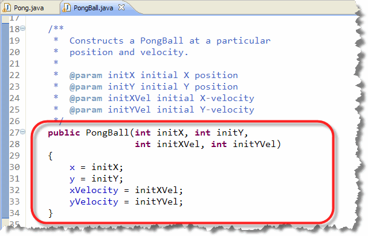
Notice that the constructor ispublic, and that it
has no return type. Adding a return type of void
is a common error that will prevent your code from working correctly
even though your class will compile without an error.
Accessor Methods
The accessor methods getX() and getY()
simply return the values of their respective fields like this:
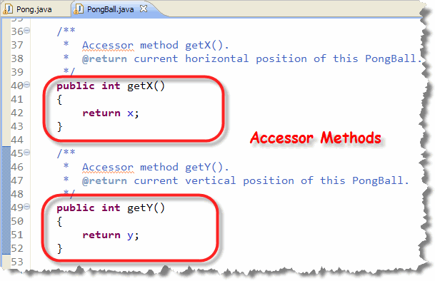
The move() Method
Reading the documentation for the mutator method
move(), you can see that it works like this:
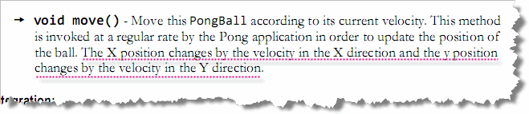
This sounds like we can just add the fieldxVelocity to
x, and add the field yVelocity to y,
leaving the result in x and y like this: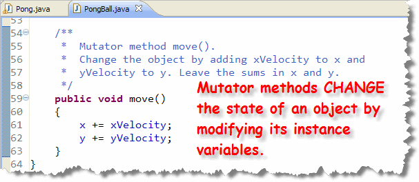
Changing Velocity
To see how to code the mutator methods bounceX()
and bounceY(), you'll need to read through the
specification again:
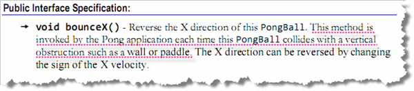
There, you can see that these methods are called when the ball "hits the wall." Your responsibility is to change the velocity which you can do by reversing the sign of each of the velocity fields, like this: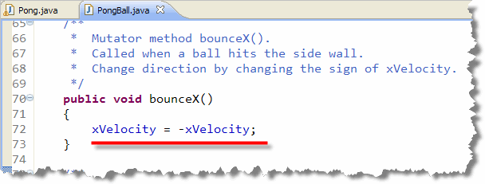
Although onlybounceX() is shown here, the code for
bounceY() is almost identical. Only the field
and method names are changed.
Try it Out
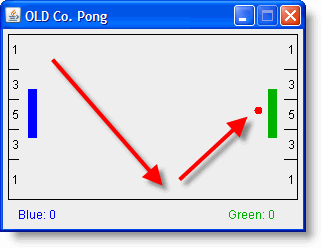
Once you've finished adding these methods to yourPongBall
class, notice that the errors in your project disappear. If you find
that's not the case, then it's likely that you made a mistake somewhere
along the way.
To try out your new code, just run the Pong program like you did at the beginning of this section. When you do, your new class will replace the old, useless class provided by the original programmers. When the program starts, press the "B" key and the ball should start bouncing. You can speed it up by pressing "B" again.
Testing
One way to test the PongBall class is to add
it to the Pong application and see if the ball begins moving
correctly. What do you do, though, if the ball doesn't work
ask you expect? How do you track down any logic errors in your code?
Because we do not know precisely
how the Pong application uses the PongBall
class, it is very difficult to determine simply by watching
the Pong application if the PongBall class behaves
correctly in every situation. Thus, before adding the
PongBall class to the Pong application we will
test its behavior independently.
I have already written a set of tests that you can access
via the Check program. If I hadn't done
that, however, you could still test the PongBall
class by writing a program named PongBallTest,
that contains a main() method. The main
method in the PongBallTest class should create several
PongBall objects and test their instance methods.
For example, the following snippet of code will create a
PongBall object and test the getX(),
getY() and move() methods:
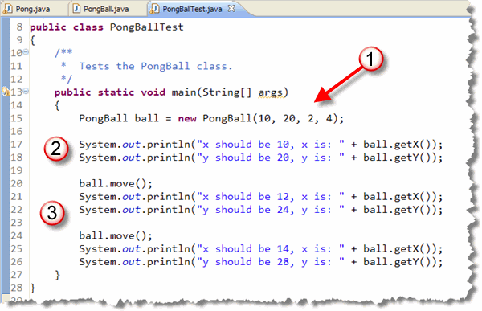
Notice that the program:- First creates a
PongBallobject, passing it some known values. Make sure you pass different values for each parameter so you can check that the output is correct. - Next, the accessor methods are used to see if the
actual values are correct. If you don't get the expected output
for
xandyat this point, you know you've made a mistake in the constructor. - Finally, a mutator method is called and then the accessors
are used to check the current state of the object. We can't check
xVelocityandyVelocitydirectly, but the changes toxandyshould be correct.
Note that the output of the test program indicates both the correct values and the actual values that are computed. Writing your test programs in this way makes it easy to tell if the class you are testing is working correctly.
In the next chapter you'll learn more about writing your own unit tests like this.
The Remaining Classes
For the remaining classes, I'm going to leave you "on your own". Follow
the same steps as you did for the PongBall class.
If you have difficulty, ask questions on the Discussion Board.
I haven't posted solutions for these classes.
The PongScore Class
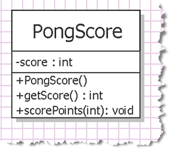
ThePongScore class describes the object
that the Pong application uses to keep track of the score
for each player. The following class diagram illustrates
the information and operations that are defined by the
PongScore class.
When the Pong application is executed it creates two
PongScore objects, one for the blue player
and one for the green player. Each time the ball contacts the
end wall behind the blue paddle, the scorePoints()
method of the green player's PongScore object is
invoked, and vice versa.
When invoking the scorePoints()
method, the Pong application passes it an argument
corresponding to the number of points indicated in the region of
the wall that was contacted. The Pong application will then invoke
the getScore() method to determine the
score to be displayed beside the player's name below the playing field.
After completing PongScore, when you run the Pong application
and press the "B" key, the ball
will again begin to bounce around the playing field. However, now each
time the ball contacts the end wall the opponent's score will be
incremented by the appropriate number of points.
The PongPaddle Class
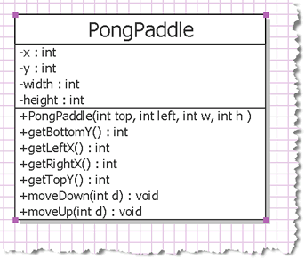
ThePongPaddle class describes the objects that the Pong
application uses to keep track of the size and location of the
pong paddles. The class diagram on the right illustrates the the
information and operations that are defined by the
PongPaddle class.
When the Pong application is run it creates two new PongPaddle
objects: one for the blue player positioned at the left end of the
playing field, the other for the green player positioned at the
right end of the playing field. When the blue player presses the "A" key,
the Pong application invokes the moveUp()
method of the blue player's PongPaddle object.
Conversely, when the blue player presses the "Z" key the Pong
application invokes the moveDown() method.
Similar actions are taken using the green player's
PongPaddle object when the "M" and "K" keys are pressed.
The Pong application then uses the getLeftX(),
getTopY(), getRightX()
and getBottomY() methods to determine where
on the screen the blue and green paddles should be drawn.
These methods are also used by the Pong application to determine when the
ball collides with one of the paddles.
When the Pong application is run, pressing the "B" key begins the ball bouncing as before. However, now when the "A" or "Z" keys are pressed the blue paddle will move up or down. Similarly, when the "K" or "M" keys are pressed the green paddle will move up or down.
Congratulations! You now have a complete working Pong application!
In Summary ...
In this section you wrote several independent classes and integrated them into a complete application. To write your classes, you learned how to define instance variables, and how to write constructors to initialize your fields. You also learned how to write accessor methods that return information about the state of your objects, and mutator methods that change the state of your objects. You also wrote mutator methods that used parameters to decide how to modify their state.